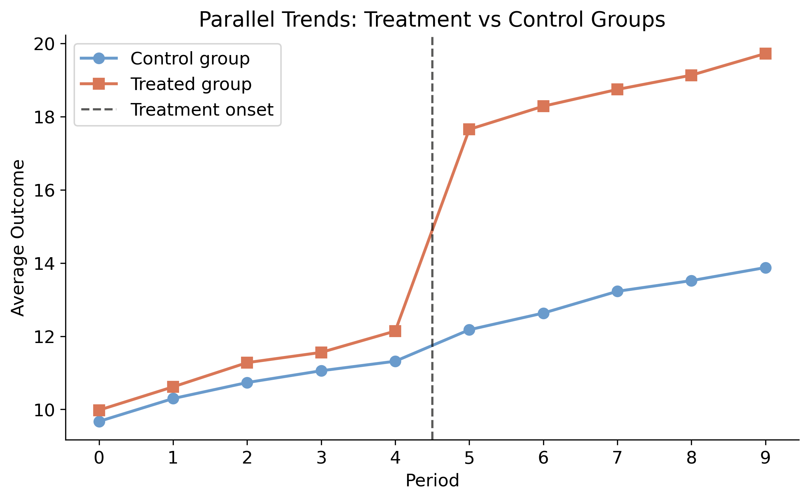
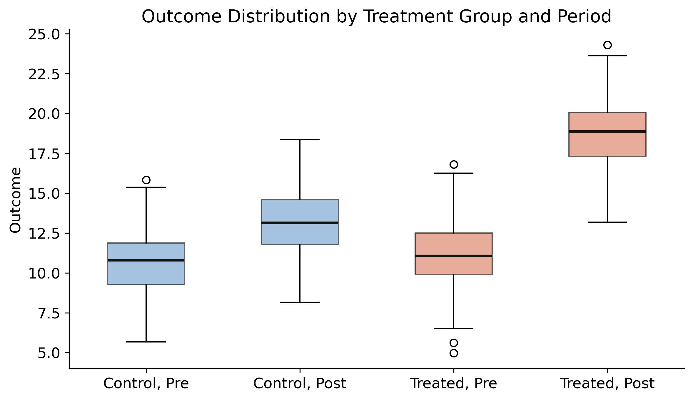
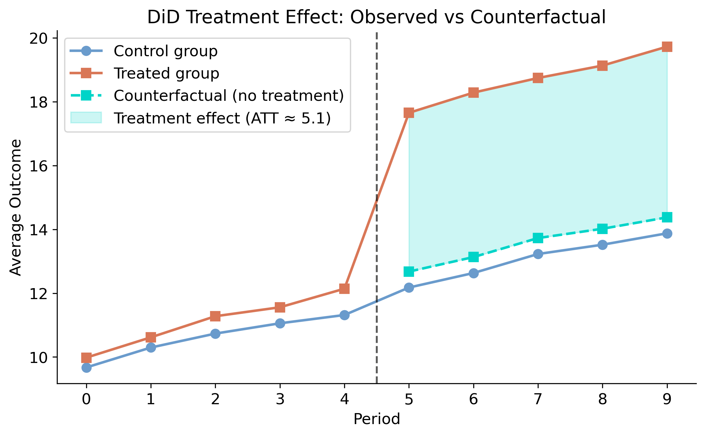
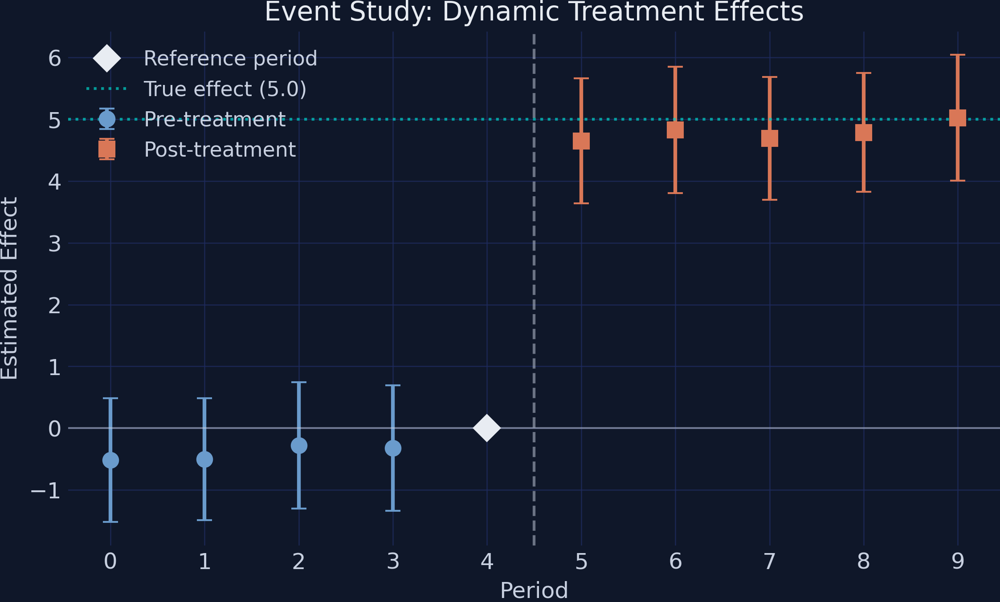
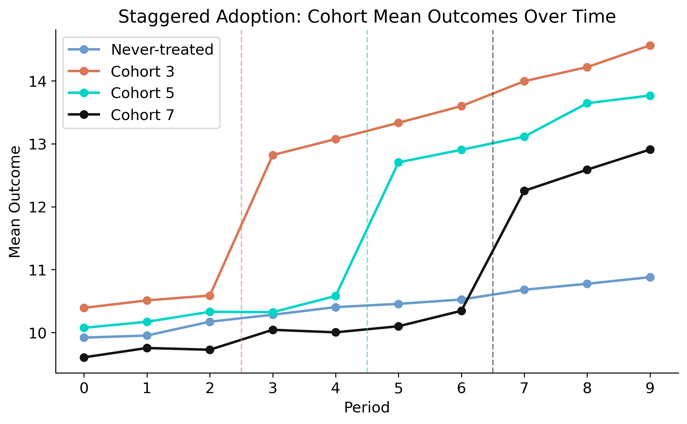
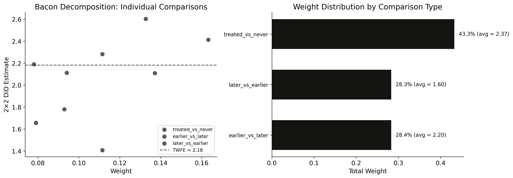
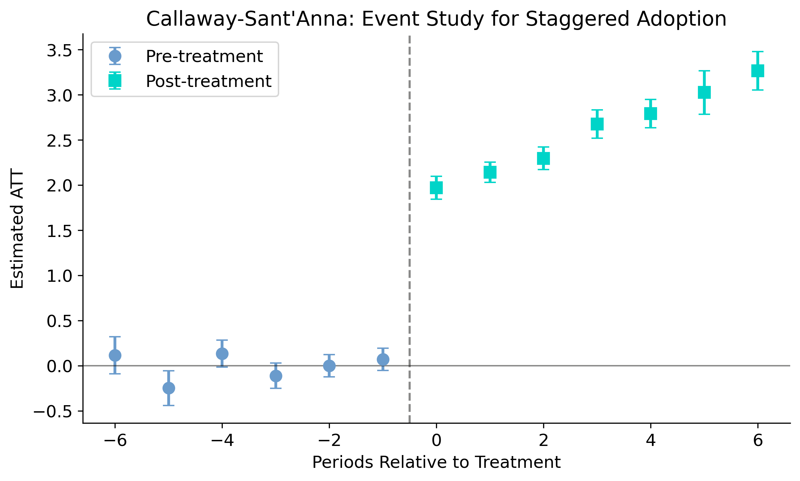
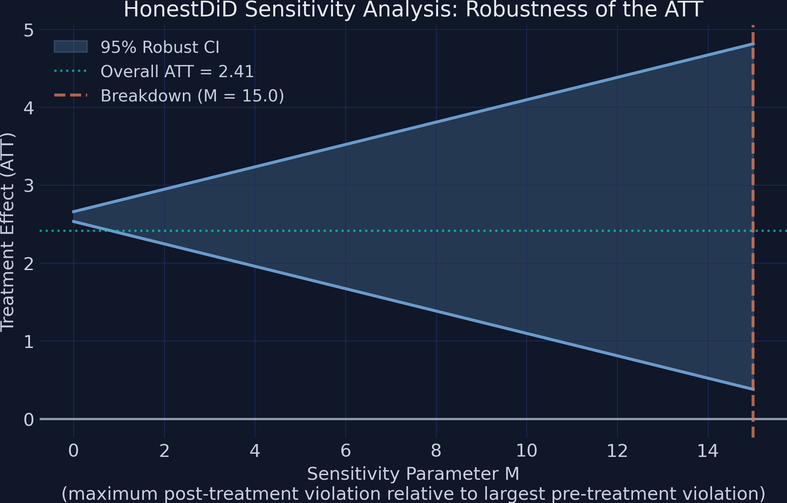

From the classic 2×2 design to staggered adoption and honest sensitivity
Nagoya University (GSID)
June 11, 2026
Act I
Some cities adopt AI tutoring bots; others do not. Scores climb in the treated cities.
But maybe those cities were already on the way up. How do you separate the policy from the trend it rode in on?

Both groups track in lockstep for periods 0–4, then the treated group jumps at treatment onset. The gap after period 5 is the effect.
Act II
\[\text{ATT} = E[Y^1_k - Y^0_k \mid \text{Post}]\]
The average gap between what treated units experienced and what they would have experienced without the policy.
\(E[Y^0_k\mid\text{Post}]\) — the treated group’s untreated outcome — is a counterfactual we never observe. DiD reconstructs it from the control group.
\[\hat{\delta}^{2 \times 2}_{kU} = \big( \bar{Y}_k^{Post} - \bar{Y}_k^{Pre} \big) - \big( \bar{Y}_U^{Post} - \bar{Y}_U^{Pre} \big)\]
The first difference removes time-invariant differences between groups; the second removes the trend common to both.
Algebra splits this into \(\underbrace{\text{ATT}}\) plus a \(\underbrace{\text{non-parallel-trends bias}}\). The bias vanishes exactly when parallel trends holds.
\[E[Y^0_k|\text{Post}] - E[Y^0_k|\text{Pre}] = E[Y^0_U|\text{Post}] - E[Y^0_U|\text{Pre}]\]
Two cities can sit at different score levels; DiD only needs them to have been rising at the same speed absent treatment.
We can check pre-treatment trends, but never the post-treatment counterfactual — which is why Act III brings sensitivity analysis.
A built-in true_effect column gives every estimate a known target to hit.

Outcome distributions by group × period. Control (steel) and treated (orange) overlap pre-treatment near 10.6–11.1; the treated box jumps to ~18.9 post-treatment.

The teal dashed line is the control group’s path shifted to the treated group’s pre-level — the no-treatment counterfactual. The shaded gap is the ~5.1 ATT.
from diff_diff import DifferenceInDifferences, generate_did_data
data = generate_did_data(n_units=100, n_periods=10,
treatment_effect=5.0, treatment_period=5, seed=42)
did = DifferenceInDifferences()
res = did.fit(data, outcome="outcome", treatment="treated", time="post")
res.print_summary() # ATT = 5.1216, 95% CI [4.6399, 5.6034]5.12
Classic 2×2 \(\widehat{\text{ATT}}\) (SE 0.25, \(t = 20.9\)) · 95% CI [4.64, 5.60] covers the true 5.0
| Group | Pre-trend slope | SE |
|---|---|---|
| Treated | 0.5262 | 0.0839 |
| Control | 0.4047 | 0.0798 |
| Difference | 0.1216 | 0.1158 |
\(t = 1.05\), \(p = 0.29\) — fail to reject equal slopes. But failing to reject is not confirming: the test has low power with only 5 pre-periods.
\[Y_{it} = \gamma_i + \lambda_t + \sum_{k=-K+1}^{-2}\beta_k^{lead}D_{it}^k + \sum_{k=0}^{L}\beta_k^{lag}D_{it}^k + \varepsilon_{it}\]
The leads \(\beta_k^{lead}\) are placebo tests (should be ~0); the lags \(\beta_k^{lag}\) trace how the effect evolves. The period before treatment is the omitted reference.

Pre-treatment coefficients (steel) hover at zero with CIs crossing it; post-treatment coefficients (orange) jump to ~5.0, matching the teal true-effect line.
TWFE fits one pooled \(\delta\) — a weighted average of many 2×2 comparisons, some of them poisoned.

Four cohorts track together pre-treatment, then cohort 3 (orange), 5 (teal), 7 (near black) each jump at its onset; never-treated (steel) drifts gently up.

Left: each 2×2 comparison as a point, forbidden ones (dark orange) cluster low. Right: weight by type — nearly a third on forbidden comparisons.
| Comparison type | Weight | Avg effect |
|---|---|---|
| Treated vs never-treated (clean) | 0.433 | 2.37 |
| Earlier vs later treated | 0.284 | 2.20 |
| Later vs earlier (forbidden) | 0.283 | 1.60 |
2.18
Naive TWFE \(\hat{\delta}\) · downward-biased by 28.3% weight on forbidden comparisons (avg effect 1.60)
\[\text{ATT}(g,t) = E[Y_t - Y_{g-1}\mid G=g] - E[Y_t - Y_{g-1}\mid G=\infty]\]
Each building block is a 2×2 that compares cohort \(g\) against the never-treated group only — every forbidden comparison eliminated by construction.
A doubly robust version reweights controls (propensity) and models their outcome change (regression): valid if either is right.

CS event study: pre-treatment effects pinned near zero (period −1 = 0 by construction); post-treatment effects rise steadily from ~2.0 to ~3.3.
Objection. Switching from TWFE to Callaway–Sant’Anna can’t manufacture identification.
Response. Correct. CS only removes contaminated comparisons; the ATT is still identified only under parallel trends and no anticipation. It buys credibility on the timing problem, not on the untestable counterfactual — so we stress-test that next.
Act III
\[|\delta_t| \leq M \cdot \max_{t' < g}|\delta_{t'}|, \quad \text{for all } t \geq g\]
\(M\) is a stress dial: \(M=0\) assumes perfect parallel trends; \(M=5\) allows post-treatment violations five times the worst pre-treatment one. The breakdown value is where the CI first touches zero.

Robust 95% CI (steel band) widening with M; ATT (teal) flat at 2.41; the lower bound is still positive (0.38) at the M = 15 grid edge (orange line).
At \(M=0\): CI [2.53, 2.66]. At \(M=15\): CI [0.38, 4.81] — still excludes zero.
M = 15
HonestDiD breakdown value · CI excludes zero even at 15× the largest pre-treatment deviation
| Setting | Estimator | \(\widehat{\text{ATT}}\) |
|---|---|---|
| Single timing | Classic 2×2 | 5.12 |
| Staggered (naive) | TWFE | 2.18 |
| Staggered (clean) | Callaway–Sant’Anna | 2.41 |
Always report the breakdown value alongside the estimate — here \(M = 15\), exceptionally robust.